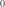
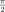

The Scene Module¶
-
class
kite.Scene(config=<kite.scene.SceneConfig object>, **kwargs)[source]¶ Bases:
kite.scene.BaseSceneScene of unwrapped InSAR ground dispacements measurements
Parameters: config ( SceneConfig, optional) – Configuration objectOptional parameters
Parameters: - displacement (
numpy.ndarray, NxM, optional) – Displacement in [m] - theta (
numpy.ndarray, NxM, optional) – Theta look angle, seeScene.theta - phi (
numpy.ndarray, NxM, optional) – Phi look angle, seeScene.phi - llLat (float, optional) – Lower left latitude in [deg]
- llLon (float, optional) – Lower left longitude in [deg]
- dLat (float, optional) – Pixel spacing in latitude [deg]
- dLon (float, optional) – Pixel spacing in longitude [deg]
-
covariance¶ Getter: (Cached) Instanciates the scene’s covariance attribute. Type: kite.covariance.Covariance
-
static
import_data(**kwargs)¶ Import displacement data from foreign file format.
param path: Filename of resource to import type path: str param kwargs: keyword arguments passed to import function type kwargs: dict returns: Scene from path rtype: Sceneraises: TypeError Supported import modules are Gamma, Matlab, ISCE, GMTSAR, ROI_PAC.
Gamma
- Reading geocoded displacement maps (unwrapped igs) originating
- from GAMMA software.
Warning
Data has to be georeferenced to latitude/longitude or UTM!
Warning
Look vector files - expected to have a particular name
Expects four files:
- Binary file from Gamma (
*) with displacement in radians. Displacements are translated to meters using the radar_frequency in [Hz] is given in the*.parfile. - Parameter file (
*par) describing corner_lat, corner_lon, nlines, width, post_lat, post_lon or ‘post_north’, ‘post_east’, ‘corner_east’, ‘corner_north’, ‘nlines’, ‘width’ - 2 look vector files (
*theta*,*phi*, generated by GAMMA command ‘look_vector’
Matlab
Variable naming conventions for Matlab
.matcontainer:Property Matlab .matnametype Scene.displacement ig_n x m array Scene.phi phin x m array Scene.theta thetan x m array Scene.frame.x xxn x 1 vector Scene.frame.y yym x 1 vector Scene.utm_zone utm_zonestr (‘33T’) Displacement is expected to be in meters.
ISCE
- Reading geocoded displacement maps (unwrapped igs) originating
- from ISCE software.
Note
reference / link to ISCE site…
Expects three files in the same folder:
- Unwrapped displacement binary (
*.unw.geo) - Metadata XML (
*.unw.geo.xml) - LOS binary data (
*.rdr.geo)
Warning
data are in radians but no transformation to meters yet, as ‘wavelength’ or at least sensor name is not provided in the XML file.
GMTSAR
Use GMT5SAR
SAT_lookto calculate the corresponding unit look vectors:gmt grd2xyz unwrap_ll.grd | gmt grdtrack -Gdem.grd | awk {'print $1, $2, $4'} | SAT_look 20050731.PRM -bos > 20050731.los.enu
Expects two binary files:
- Displacement grid (NetCDF,
*los_ll.grd) in cm (get transformed to meters) - LOS binary data (see instruction,
*los.enu)
ROI_PAC
Warning
Data has to be georeferenced to latitude/longitude!
The unwrapped displacement is expected in radians and will be scaled to meters by WAVELENGTH parsed from the
*.rscfile.Expects two files:
- Binary file from ROI_PAC (
*) - Parameter file (
<binary_file>.rsc) describing'WIDTH', 'FILE_LENGTH', 'X_FIRST', 'Y_FIRST', 'X_STEP', 'Y_STEP', 'WAVELENGTH
-
static
load(**kwargs)¶ Load a kite scene from file
filename.[npz,yml]structure.Parameters: filename (str) – Filenames the scene data is saved under Returns: Scene object from data resources Return type: Scene
-
plot¶ Getter: (Cached) Shows a simple plot of the scene’s displacement
-
quadtree¶ Getter: (Cached) Instanciates the scene’s quadtree. Type: kite.quadtree.Quadtree
-
save(filename=None)[source]¶ Save kite scene to kite file structure
Saves the current scene meta information and UTM frame to a YAML (
.yml) file. Numerical data (displacement,thetaandphi) are saved as binary files fromnumpy.ndarray.Parameters: filename (str, optional) – Filenames to save scene to, defaults to ‘ scene_id_scene_view
- displacement (
-
class
kite.scene.BaseScene(**kwargs)[source]¶ -
displacement¶ Geodetical displacement in [m].
Setter: Set the unwrapped InSAR displacement. Getter: Return the displacement matrix. Type: numpy.ndarray,NxM
-
displacement_mask¶ Getter: (Cached) Displacement numpy.nanmaskType: numpy.ndarray, dtypenumpy.bool
-
los_rotation_factors¶ Getter: (Cached) Trigonometric factors to rotate displacement matrices towards LOS Rotation is as follows:
Returns: Factors for rotation Return type: numpy.ndarray,NxMx3Raises: AttributeError
-
phi¶ - Horizontal angle towards satellite’ line of sight
- in [rad]
Important
Kite convention is:
-  is East
-  is North!
Setter: Set the phi matrix for scene’s displacement, can be int for static look vector. Type: numpy.ndarray, size same asdisplacementor int
-
phiDeg¶ Getter: (Cached) LOS horizontal orientation angle in degree, NxMmatrix likekite.Scene.thetaType: numpy.ndarray
-
theta¶ - Theta is look vector elevation angle towards satellite from horizon
- in radians. Matrix of theta towards satellite’s line of sight.
Important
Kite convention!
 is Down
is Down- is Up
Setter: Set the theta matrix for scene’s displacement, can be int for static look vector. Type: numpy.ndarray, size same asdisplacementor int
-
thetaDeg¶ Getter: (Cached) LOS elevation angle in degree, NxMmatrix likekite.Scene.thetaType: numpy.ndarray
-
The SceneConfig¶
-
class
kite.scene.SceneConfig(**kwargs)[source]¶ - Configuration object, gathering
kite.Sceneand - sub-objects configuration.
-
♦
meta¶ Meta, default:<kite.scene.Meta object at 0x7f079635cfd0>Scene metainformation
-
♦
frame¶ FrameConfig, default:<kite.scene.FrameConfig object at 0x7f07960e3050>Frame/reference configuration
-
♦
quadtree¶ kite.quadtree.QuadtreeConfig, default:<kite.quadtree.QuadtreeConfig object at 0x7f07960e3150>Quadtree parameters
-
♦
covariance¶ kite.covariance.CovarianceConfig, default:<kite.covariance.CovarianceConfig object at 0x7f07960e31d0>Covariance parameters
- Configuration object, gathering
The Meta Information Container¶
A Scene holds several configuration objects:
-
class
kite.scene.Meta(**kwargs)[source]¶ Meta configuration for
Scene.-
♦
scene_title¶ str, default:'Undefined'Scene title
-
♦
scene_id¶ str, default:'None'Scene identification
-
♦
satellite_name¶ str, default:'Undefined'Satellite mission name
-
♦
wavelength¶ float, optionalWavelength in [m]
-
♦
orbit_direction¶ str(pyrocko.guts.StringChoice), default:'Undefined'Orbital direction, ascending/descending
-
♦
time_master¶ float(pyrocko.guts.Timestamp), default:1481116161.930574Timestamp for master acquisition
-
♦
time_slave¶ float(pyrocko.guts.Timestamp), default:1482239325.482Timestamp for slave acquisition
-
♦
extra¶ dictofpyrocko.guts.Anyobjects, default:{}Extra header information
-
♦
filename¶ str, optional
-
♦
The Frame¶
-
class
kite.scene.Frame(scene, config=<kite.scene.FrameConfig object>)[source]¶ UTM frame holding geographical references for
kite.scene.Scene-
coordinates¶ Getter: (Cached) Undocumented
-
gridE¶ Getter: (Cached) UTM grid holding eastings of all pixels in NxMmatrix ofdisplacement.Type: numpy.ndarray, sizeNxM
-
gridN¶ Getter: (Cached) UTM grid holding northings of all pixels in NxMmatrix ofdisplacement.Type: numpy.ndarray, sizeNxM
-
mapENMatrix(E, N)[source]¶ - Maps local coordinates (easting and northing) to matrix
- row and column
Parameters: - E (float) – Easting in local coordinates
- N (float) – Northing in local coordinates
Returns: Row and column
Return type: tuple (int), (row, column)
-
mapMatrixEN(row, col)[source]¶ Maps matrix row, column to local easting and northing.
Parameters: - row (int) – Matrix row number
- col (int) – Matrix column number
Returns: Easting and northing in local coordinates
Return type: tuple (float), (easting, northing)
-
setENOffset(east, north)[source]¶ Set scene offsets in local cartesian coordinates.
Parameters: - east (float,
numpy.ndarrayor None) – East offset in [m] - north (float,
numpy.ndarrayor None) – North offset in [m]
- east (float,
-
The FrameConfig¶
-
class
kite.scene.FrameConfig(**kwargs)[source]¶ Config object holding
kite.scene.Scenecobfiguration-
♦
llLat¶ float, default:0.0Scene latitude of lower left corner
-
♦
llLon¶ float, default:0.0Scene longitude of lower left corner
-
♦
dLat¶ float, default:0.001Scene pixel spacing in x direction [deg]
-
♦
dLon¶ float, default:0.001Scene pixel spacing in y direction [deg]
-
♦
The LOSUnitVectors¶
-
class
kite.scene.LOSUnitVectors(scene)[source]¶ Decompose line-of-sight (LOS) angles derived from
displacementto unit vector.-
unitE¶ Getter: (Cached) Unit vector east component, NxMmatrix likedisplacementType: numpy.ndarray
-
unitN¶ Getter: (Cached) Unit vector north component, NxMmatrix likedisplacementType: numpy.ndarray
-
unitU¶ Getter: (Cached) Unit vector vertical (up) component, NxMmatrix likedisplacementType: numpy.ndarray
-
The Scene I/O Modules¶
-
class
kite.scene_io.Gamma(scene=None)[source]¶ - Reading geocoded displacement maps (unwrapped igs) originating
- from GAMMA software.
Warning
Data has to be georeferenced to latitude/longitude or UTM!
Warning
Look vector files - expected to have a particular name
Expects four files:
- Binary file from Gamma (
*) with displacement in radians. Displacements are translated to meters using the radar_frequency in [Hz] is given in the*.parfile. - Parameter file (
*par) describing corner_lat, corner_lon, nlines, width, post_lat, post_lon or ‘post_north’, ‘post_east’, ‘corner_east’, ‘corner_north’, ‘nlines’, ‘width’ - 2 look vector files (
*theta*,*phi*, generated by GAMMA command ‘look_vector’
-
class
kite.scene_io.Matlab(scene=None)[source]¶ Variable naming conventions for Matlab
.matcontainer:Property Matlab .matnametype Scene.displacement ig_n x m array Scene.phi phin x m array Scene.theta thetan x m array Scene.frame.x xxn x 1 vector Scene.frame.y yym x 1 vector Scene.utm_zone utm_zonestr (‘33T’) Displacement is expected to be in meters.
-
class
kite.scene_io.ISCE(scene=None)[source]¶ - Reading geocoded displacement maps (unwrapped igs) originating
- from ISCE software.
Note
reference / link to ISCE site…
Expects three files in the same folder:
- Unwrapped displacement binary (
*.unw.geo) - Metadata XML (
*.unw.geo.xml) - LOS binary data (
*.rdr.geo)
Warning
data are in radians but no transformation to meters yet, as ‘wavelength’ or at least sensor name is not provided in the XML file.
-
class
kite.scene_io.GMTSAR(scene=None)[source]¶ Use GMT5SAR
SAT_lookto calculate the corresponding unit look vectors:gmt grd2xyz unwrap_ll.grd | gmt grdtrack -Gdem.grd | awk {'print $1, $2, $4'} | SAT_look 20050731.PRM -bos > 20050731.los.enu
Expects two binary files:
- Displacement grid (NetCDF,
*los_ll.grd) in cm (get transformed to meters) - LOS binary data (see instruction,
*los.enu)
- Displacement grid (NetCDF,
-
class
kite.scene_io.ROI_PAC(scene=None)[source]¶ Warning
Data has to be georeferenced to latitude/longitude!
The unwrapped displacement is expected in radians and will be scaled to meters by WAVELENGTH parsed from the
*.rscfile.Expects two files:
- Binary file from ROI_PAC (
*) - Parameter file (
<binary_file>.rsc) describing'WIDTH', 'FILE_LENGTH', 'X_FIRST', 'Y_FIRST', 'X_STEP', 'Y_STEP', 'WAVELENGTH
- Binary file from ROI_PAC (